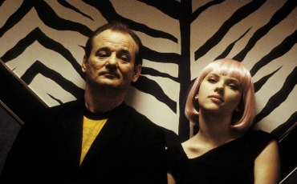
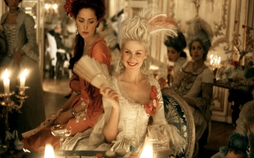

WHY
Why is Sofia Coppola my favorite movie director?
Sofia Coppola is my favorite movie director because of her versatility - she can write and direct original stories from so many different genres. It’s also rare for a female movie director in Hollywood to have the power that she has to work with any actor that she wants, and to tell any story that she wants. She’s won prizes at top film festivals, sometimes the first woman to do so, and breaks down barriers for female filmmakers everywhere!
Movies
My favorite movies by Sofia Coppola

Lost in Translation
This film is about Bob, an American actor in Tokyo having a midlife crisis, who meets a young American woman called Charlotte. We see them strike up a strange and fun relationship.
Release
September 12, 2023
What I like about?
This is a film about people being alienated - from other people, from their location. It’s sometimes surreal, sometimes funny and very original.
Watch TrailerThe Bling Ring
A group of high-school students begins breaking into the homes of major celebrities to rob them of millions of dollars in clothes, shoes and jewellery. Based on a true story!
Release
June 14, 2013
What I like about?
Even though the characters are doing terrible things, Coppola lets the audience form our own judgements. I like movies that don’t patronize.
Watch Trailer
Marie Antoinette
This film is a stylish and dramatic retelling of the story of the famous French queen Marie Antoinette, based on her life leading up to the French Revolution - which won’t end well for her...
Release
May 24, 2006
What I like about?
This film is stylish and beautifully filmed but with hidden depths exploring fame and womanhood again with zero judgement from an expert director.
Watch Trailer